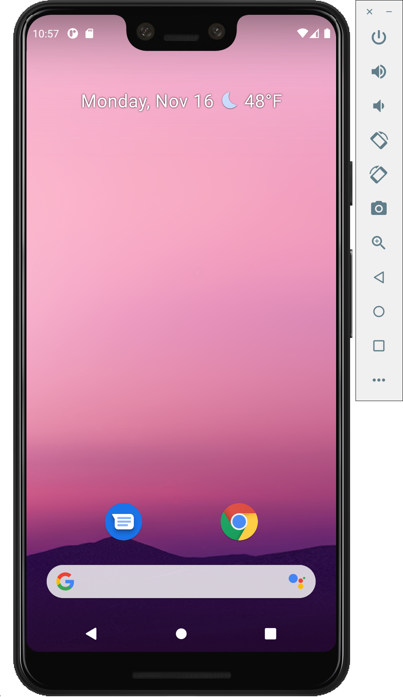

Mobile
Implementation
When I began exploring Kotlin for mobile development, two clear paths stood out to me. This first was one that I had already touched when building my full stack server. That is by using Kotlin Multiplatform. Here, you can write one repository of source code that is compiled down to both the Android and iOS platforms. The other way to get started using Kotlin for mobile is by writing an Android app directly. Since this was something that I hadn't explored before, I decided to dive in!
Since Google I/O 2019, Google has been Kotlin first with regards to Android development. To familiarize myself with this use case, I followed a tutorial available on the android website for developers to create an interactive dice rolling app. To begin, I downloaded and installed Google's Android Studio. This is the best way to create apps that will run on the Android platform. It includes many of the tools that come with the JetBrains editors, and also includes some tools specific to Android development like a visual layout editor and an Android emulator. Later, I will demonstrate my finished app on an emulated Google Pixel 3 XL.
Next, I started a new project by using the Android Studio Project Wizard. After configuring a new emulator instance, I was able to start the application and was greeted by a "Hello, World" android application.
Then, I used Android Studio to edit the activity_main.xml file. In Android, each app has a main activity. In my app, this main activity involved rolling a die and reporting the result to the user. To add a button to the main screen, I used the Layout Editor to add a button component to the component tree. Then, I anchored this button to the bottom of the "Hello, World" message. This keeps the bottom from floating freely around the screen. Next, I added some functionality to the bottom. Initially, I did this by adding a Toast to the screen when the user clicked the button. A Toast is a short message that is displayed to the user. This functionality is defined in the MainActivity.kt file when the main activity is created. After seeing this work, I started to implement the dice logic.
Then, I used Android Studio to edit the activity_main.xml file. In Android, each app has a main activity. In my app, this main activity involved rolling a die and reporting the result to the user. To add a button to the main screen, I used the Layout Editor to add a button component to the component tree. Then, I anchored this button to the bottom of the "Hello, World" message. This keeps the bottom from floating freely around the screen. Next, I added some functionality to the bottom. Initially, I did this by adding a Toast to the screen when the user clicked the button. A Toast is a short message that is displayed to the user. This functionality is defined in the MainActivity.kt file when the main activity is created. After seeing this work, I started to implement the dice logic.
When referring to uploaded images in Kotlin, you must use their resource IDs. This looks like "R.drawable.dice_1", "R.drawable.dice_1", etc. Finally, I used a Kotlin 'when' statement to determine which image to load based on which integer was reported from the Roll class. As a finishing touch, I updated the logic to roll the dice when the app is first loaded. Before, the screen was blank until the button was pushed the first time. Additionally, I used the Constraint Widget from within the Layout Editor to add a small margin between the top of the button and the bottom of the die image. A video demo of the complete app can be seen below.
Analysis
Kotlin for Android was an incredibly refreshing experience! Kotlin is the go to language for Android development, and now I understand why. The object-oriented capabilities of Kotlin tied with all of its awesome collections methods makes it ideal for developing large data intensive applications. Due to Google's Kotlin-first approach to Android development, there is a ton of support for Kotlin on mobile. Before Kotlin, most Android apps were written in Java. However, writing apps in Java required much more boilerplate code. According to Google, 67% of professional developers who use Kotlin say that Kotlin has increased their productivity. Additionally, Kotlin provides many language features to automatically avoid null pointer exceptions. Finally, Kotlin coroutines make working with asynchronous code as easy as possible. In my opinion, Kotlin scores highly in readability, writability, and guidance when used for Android development.